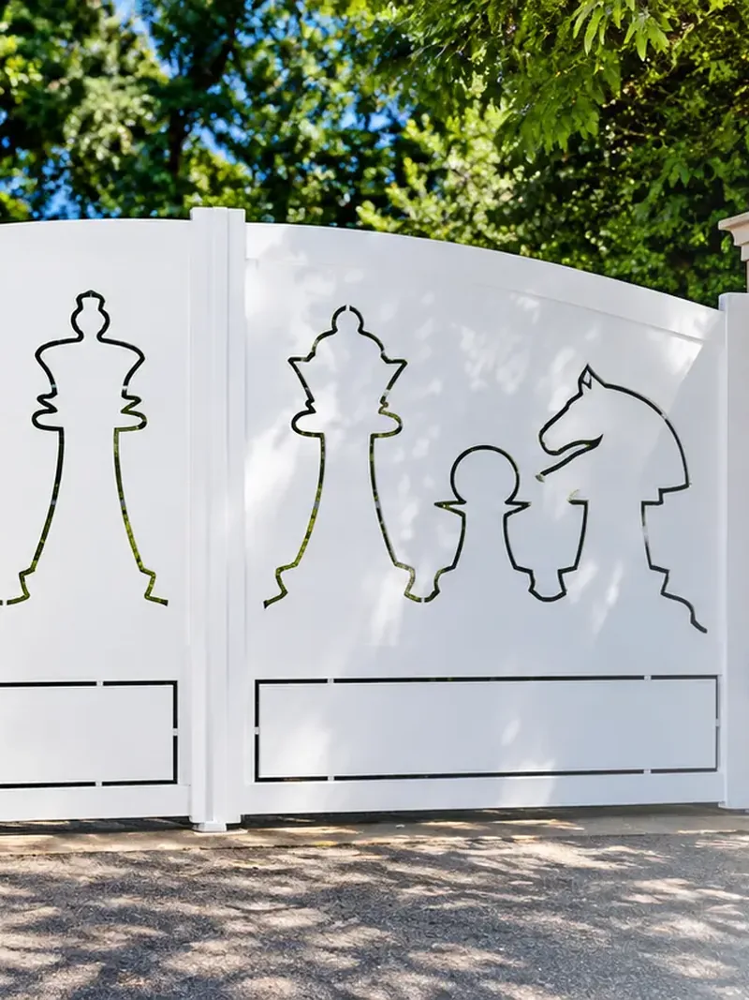
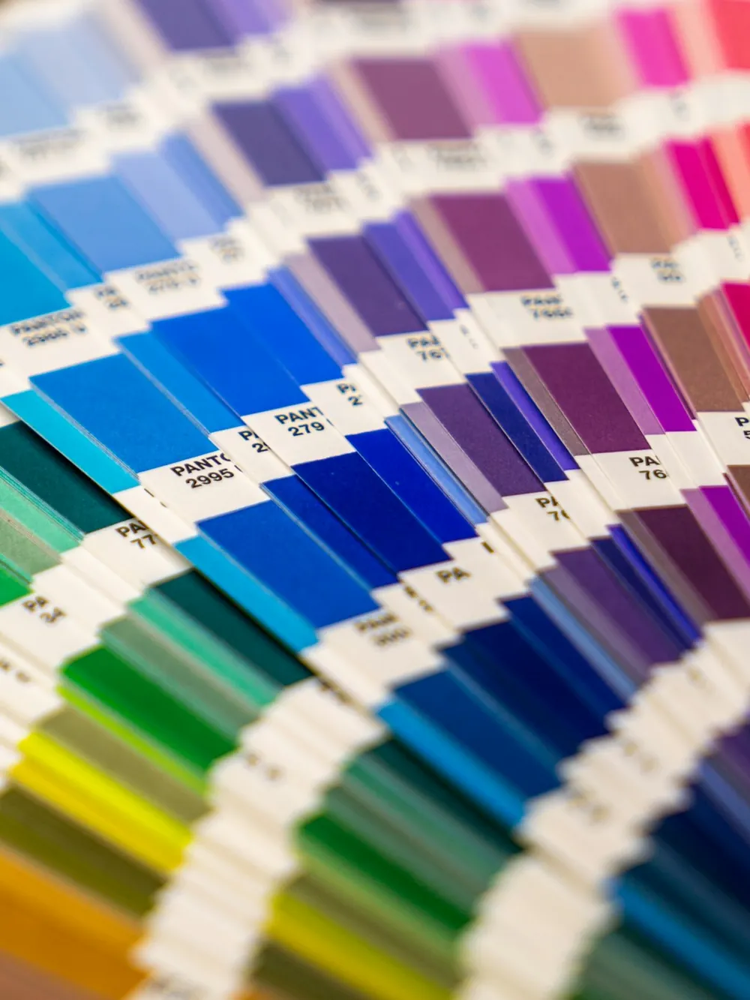
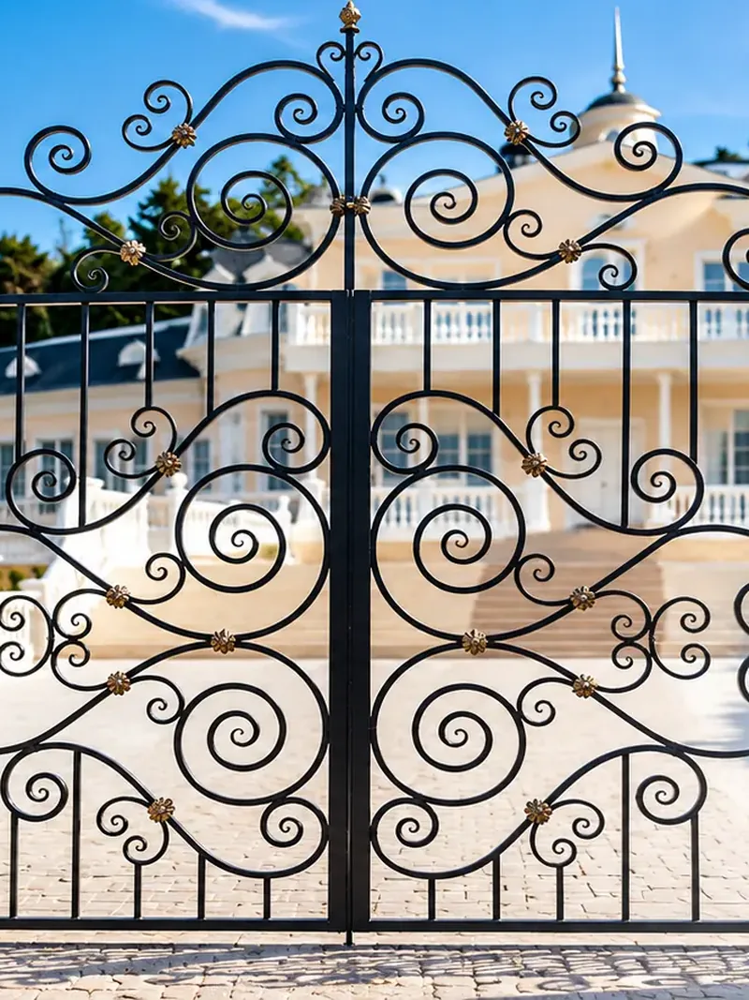
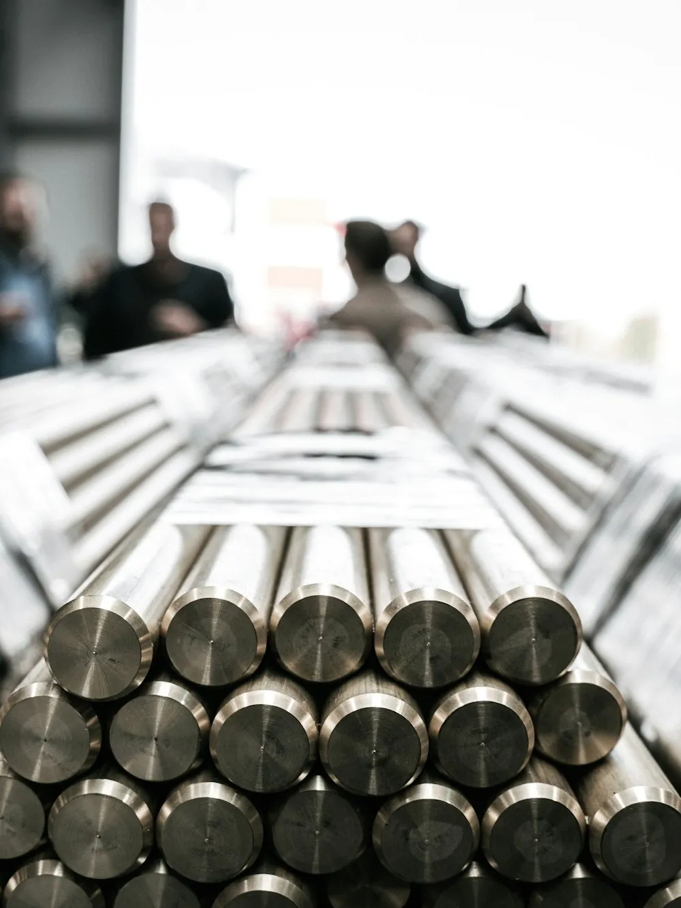
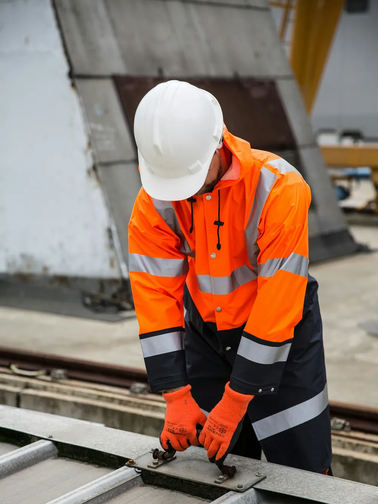
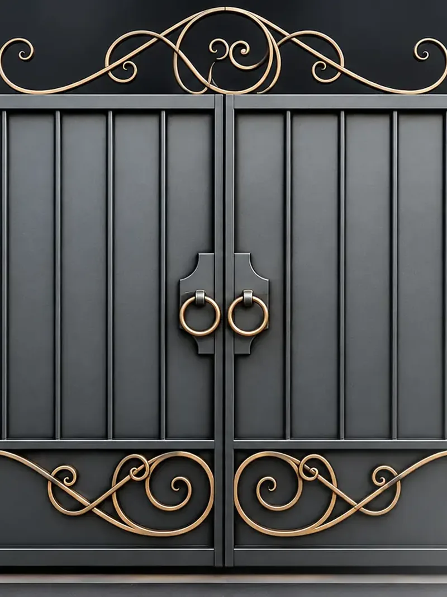

La Ferronnerie du Rouret | Ferro battuto su misura a Nizza e in Costa Azzurra
Ferro battuto, acciaio o alluminio: recinzioni progettate, realizzate e installate dalla nostra officina.
La recinzione in ferro è la soluzione ideale per proteggere un terreno, mettere in sicurezza un'abitazione e abbellire gli spazi esterni. Grazie alla sua solidità e al design personalizzabile, si adatta perfettamente a case indipendenti, giardini, aziende ed edifici professionali.
Realizzate su misura, le nostre recinzioni metalliche uniscono resistenza, eleganza e durata per rispondere alle esigenze più elevate.

Prima di qualsiasi realizzazione, effettuiamo uno studio completo del terreno per stabilire:
Questa fase permette di progettare una recinzione perfettamente adatta alla vostra proprietà.
Viene elaborato un progetto dettagliato per definire:
Ogni progetto è interamente personalizzabile secondo le esigenze del cliente.
I tubi e i profili metallici vengono tagliati con precisione secondo le dimensioni previste. I materiali utilizzati possono includere:
I diversi pezzi vengono assemblati e poi saldati per formare pannelli robusti e perfettamente allineati.
Ogni saldatura viene controllata per garantire un'eccellente resistenza meccanica e una lunga durata.
Dopo la saldatura, le saldature vengono accuratamente molate e le superfici preparate per ricevere i trattamenti protettivi.
Questa fase assicura una finitura pulita e professionale.
Per proteggere la recinzione dalla ruggine e dalle intemperie, vengono applicati diversi trattamenti:
Questa protezione garantisce la massima durata anche all'esterno.
La recinzione riceve poi una finitura di alta qualità tramite verniciatura a polvere o verniciatura industriale. Vantaggi:
I pannelli vengono fissati su pali metallici saldamente ancorati al suolo. L'installazione è eseguita con precisione per assicurare:
Una recinzione metallica su misura protegge efficacemente il vostro terreno donando al contempo un tocco elegante all'esterno. Grazie a materiali di qualità e a un savoir-faire artigianale, ogni realizzazione è pensata per offrire robustezza, estetica e durata.
La nostra impresa di ferro battuto realizza recinzioni in ferro adatte alle esigenze di privati, professionisti ed enti pubblici.






Risposte chiare per affrontare con serenità il tuo progetto di ferro battuto.
Di solito tra 1,20 m e 2 m. Verifichiamo con voi le regole urbanistiche del vostro comune prima della realizzazione.
Sì. I pannelli vengono fissati su piastre o murati nel muretto, oppure posati a terra su pali.
Sì. Stesso disegno, stesse barre e stessa tinta RAL: recinzione, cancello e cancelletto formano un insieme armonioso.
Sì. La zincatura e la verniciatura a polvere proteggono a lungo l'acciaio dalla corrosione, anche in riva al mare.
Sì. Il sopralluogo, il rilievo delle misure e il preventivo sono gratuiti e senza impegno in tutta la zona di Nizza e della Costa Azzurra.
Descrivici il tuo progetto: prendiamo le misure sul posto e ti consegniamo un preventivo chiaro e gratuito.


.svg)
.svg)